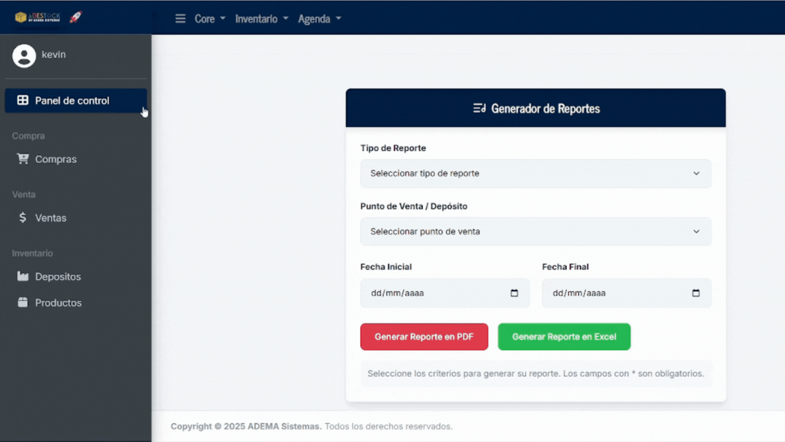
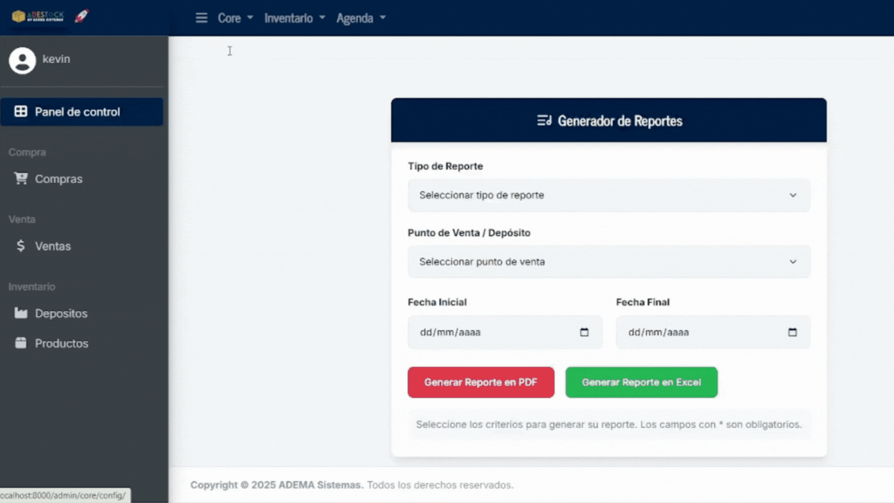

Esta es la empresa que administra todo. Es la "cabeza del sistema", desde donde vas a poder ver y controlar las demás empresas, sus depósitos y movimientos.
1
Accede al panel de administración.
Verás en la parte superior 3 módulos (Core, Inventario y Agenda), debes ingresar en "Core" > "Empresa Principal".

2
Completa los datos básicos
Carga nombre de tu Empresa, dirección, correo electrónico de contacto, logo y la configuración de precios de variantes.

Explicación: Si las variantes de tus productos de tipo 'Madre' tienen costos diferentes selecciona 'Por Variante'. (Profundizamos esto cuando veamos el inventario de productos).